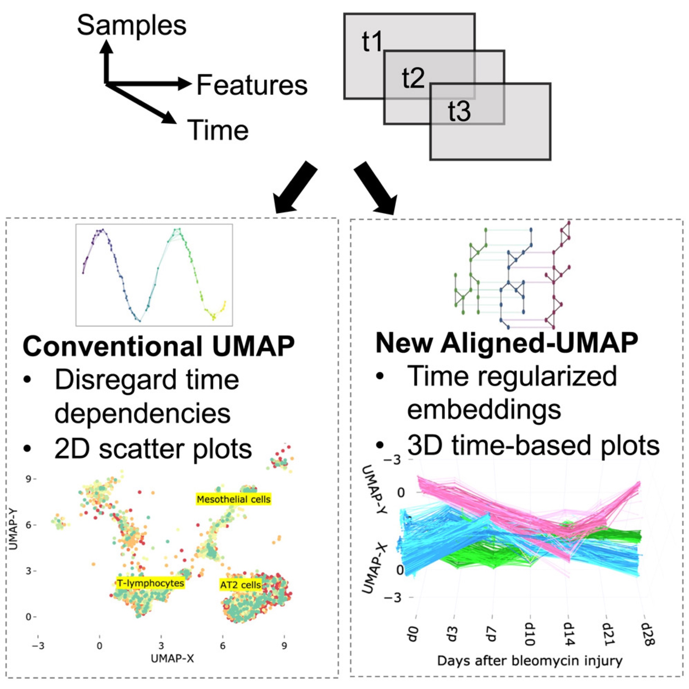
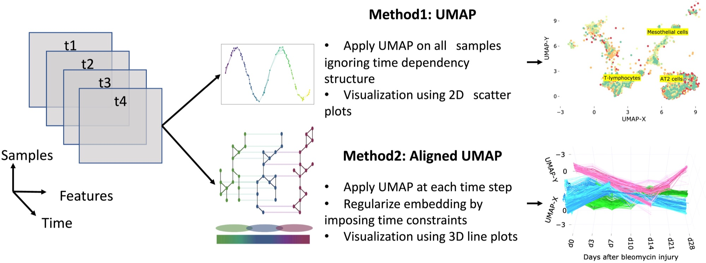
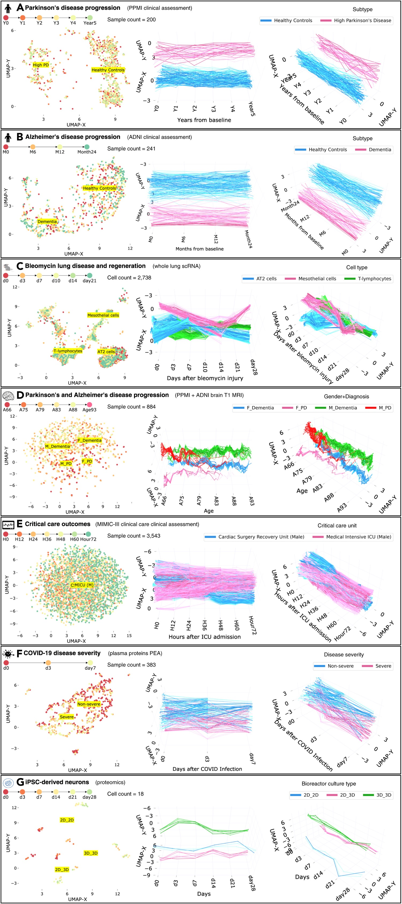
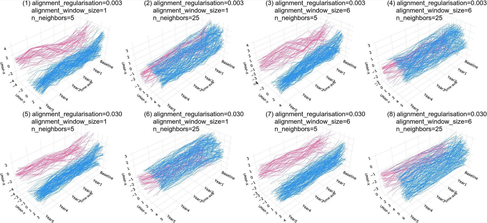
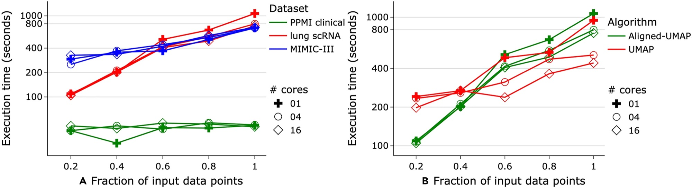

Summary
High-dimensional data analysis starts with projecting the data to low dimensions to visualize and understand the underlying data structure. Several methods have been developed for dimensionality reduction, but they are limited to cross-sectional datasets. The recently proposed Aligned-UMAP, an extension of the uniform manifold approximation and projection (UMAP) algorithm, can visualize high-dimensional longitudinal datasets. We demonstrated its utility for researchers to identify exciting patterns and trajectories within enormous datasets in biological sciences. We found that the algorithm parameters also play a crucial role and must be tuned carefully to utilize the algorithm’s potential fully. We also discussed key points to remember and directions for future extensions of Aligned-UMAP. Further, we made our code open source to enhance the reproducibility and applicability of our work. We believe our benchmarking study becomes more important as more and more high-dimensional longitudinal data in biomedical research become available.
Core contributions
- 1Seeing change over timeAligned-UMAP keeps each sample linked across time points, so high-dimensional longitudinal data can be viewed as trajectories rather than separate snapshots.
- 2Seven datasets, six data typesClinical assessments, brain MRI, electronic health records, proteomics, single-cell RNA and stem-cell-derived neurons, from 18 to over 36,000 samples.
- 3Meaningful patternsFast-progressing Parkinson’s and dementia groups, lung-regeneration dynamics, ICU care units, COVID-19 severity and lab batch effects all stand out.
- 4Practical guidanceShows how the alignment window, alignment regularizer and number of neighbours shape the result, and how to handle missing visits.
- 5Run-time benchmarkCompares UMAP and Aligned-UMAP speed across data sizes and CPU cores.
- 6Open sourceCode on GitHub and an interactive web app to explore the embeddings and parameters.
Method
1UMAP vs. Aligned-UMAP
UMAP builds a nearest-neighbour graph of the data and lays it out in two dimensions, preserving local and some global structure, and is fast enough for large datasets. Applied separately at each time point, though, its randomness scrambles how samples move. Aligned-UMAP optimizes the embeddings for all time points together, with a regularizer that limits how far the same sample can move between time points, so each sample becomes a thread through time.

2Seven longitudinal datasets
We tested Aligned-UMAP on public and published datasets covering six data types:
| Dataset | Data type | Samples | Features | Time points |
|---|---|---|---|---|
| PPMI (Parkinson’s) | Clinical assessment | 476 | 122 | 6 |
| ADNI (Alzheimer’s) | Clinical assessment | 435 | 78 | 4 |
| PPMI + ADNI brain MRI | T1 MRI imaging | 2,836 | 406 | 52 |
| MIMIC-III (intensive care) | Electronic health records | 36,675 | 64 | 6 |
| COVID-19 | Proteomics | 383 | 1,463 | 3 |
| Whole-lung (mouse) | Single-cell RNA | 10,111 | 21,767 | 7 |
| iPSC-derived neurons | Proteomics | 18 | 4,959 | 6 |
Results
Coloured by known labels, Aligned-UMAP revealed time-dependent patterns that plain UMAP missed:
- Parkinson’s and Alzheimer’s: fast-progressing PD and dementia groups drift away from healthy controls over the years.
- Lung regeneration: after injury, mesothelial cells spike around day 14 and then return toward their healthy state.
- Brain MRI: ageing trajectories differ by diagnosis and sex, with a faster decline in women with dementia around age 80.
- Intensive care: patient trajectories separate by care unit, which plain UMAP could not show.
- COVID-19: severe and non-severe patients follow distinct trajectories over seven days.
- Quality control: neurons grown in different bioreactors show batch effects; 3D-cultured cells become more uniform after about a week.

Practical guide
1Parameters matter
- Alignment window size and alignment regularizer control how smoothly samples move over time, alongside UMAP’s usual number of neighbours and minimum distance.
- Missing visits are handled by interpolating in the low-dimensional space, though missing features within a visit are not.

2Run time
- More CPU cores help only for large data: on small datasets, extra cores did not speed things up, but the full lung single-cell data ran much faster on 16 cores.
- Aligned-UMAP needs larger datasets than UMAP before parallelization pays off.

In the news
- Application of Aligned-UMAP to longitudinal biomedical studies — Health & Medicine Week, NewsRx
BibTeX
@article{dadu2023application,
title = {Application of {Aligned-UMAP} to longitudinal biomedical studies},
author = {Dadu, Anant and Satone, Vipul K and Kaur, Rachneet and
Koretsky, Mathew J and Iwaki, Hirotaka and Qi, Yue A and
Ramos, Daniel M and Avants, Brian and Hesterman, Jacob and
Gunn, Roger and Cookson, Mark R and Ward, Michael E and
Singleton, Andrew B and Campbell, Roy H and Nalls, Mike A and
Faghri, Faraz},
journal = {Patterns},
volume = {4},
number = {6},
pages = {100741},
year = {2023},
doi = {10.1016/j.patter.2023.100741}
}Acknowledgments
We thank the patients and their families who contributed to this research. This research was supported in part by the Intramural Research Program of the National Institute on Aging (NIA) and National Institute of Neurological Disorders and Stroke (NINDS), both part of the National Institutes of Health, within the Department of Health and Human Services, project numbers ZIA AG000534, ZO1 AG000949 and ZIA-NS003154, and the Michael J. Fox Foundation. Data used in the preparation of this article were obtained from the PPMI database; PPMI, a public–private partnership, is funded by the Michael J. Fox Foundation for Parkinson’s Research and funding partners. Data and biospecimens were also obtained from the Parkinson’s Disease Biomarkers Program (PDBP) Consortium, part of the NINDS at the National Institutes of Health; the PDBP investigators have not participated in reviewing the data analysis or content of the manuscript. Data collection and sharing for this project was funded by the Alzheimer’s Disease Neuroimaging Initiative (ADNI) (NIH grant U01 AG024904) and DOD ADNI (Department of Defense award number W81XWH-12-2-0012), with funding from the National Institute on Aging, the National Institute of Biomedical Imaging and Bioengineering, and private-sector partners.